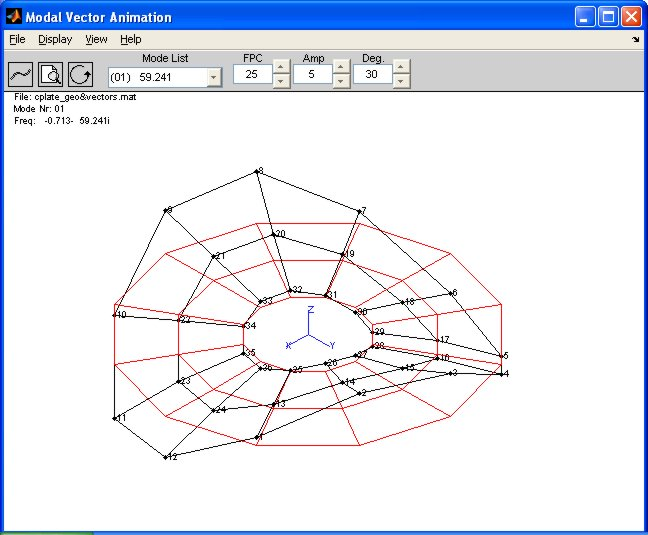
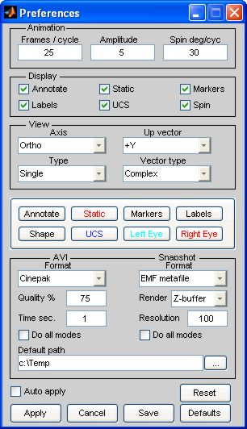
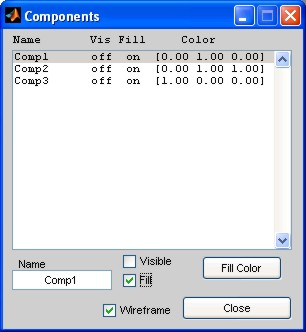
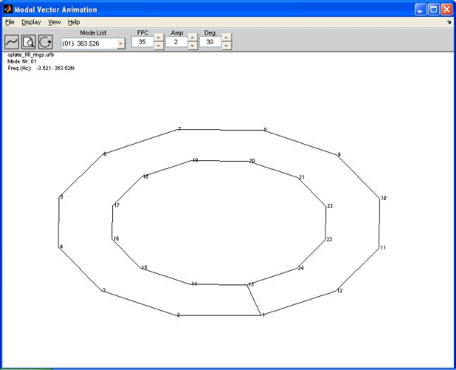
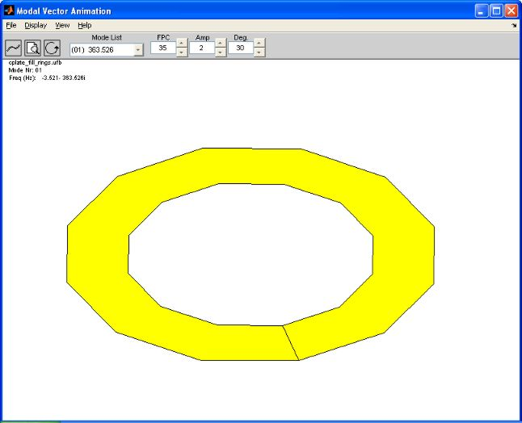
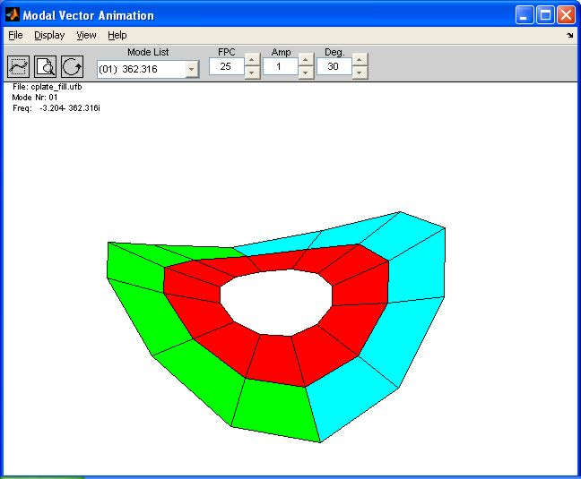

Modal Vector Animation is a set of Matlab created functions originally created to assist students at the University of Cincinnati with visualizing the modal parameters determined by code written by the students from data acquired by the students in an academic setting. The original code was modified to provide a complete tool to be deployable for an individual or company with the need or desire to visualize modal vectors obtained from experimental data parameter estimation. The compiled code can be delivered with the experimental results to a customer without the need for Matlab or costly commercial software.
The appearance and functionality is based on the java animation used for the University of Cincinnati Structural Dynamics Research Laboratory's experimental data analysis software, X-Modal II which is Matlab based software providing tools to perform Modal Parameter Estimation using classic parameter estimation routines and the Advanced Mode Indicator Function parameter estimation, Impedance Modeling, Computed Order Tracking, and Data Visualization. More information about the X-Modal II software can be obtained from UC-SDRL.
Experimental Data Viewer is another tool that may be useful for individuals or company's interested in viewing raw data obtained from experimental techniques in the universal file format.
This software can be freely distributed with the understanding that support does not exist (you get what you pay for).
Some of the features used in this software were obtained from the Mathworks user contributed files website. I would like to express my gratitude to the authors for providing valuable code to Matlab users.
View3d
% Torsten Vogel 09.04.1999
% tv.volke@bmw.de
% tested under Matlab 5.2
It provides the zoom and pan as well as the XY and Z rotation features. This file was slightly modified to incorporate multiple axes (cross-eyed, red/blue glasses, and quad views).
Universal file reading and writing
% FREE SOFTWARE - please refer the source
% Copyright (c) 2004-2005 by Primoz Cermelj
% First release on 30.05.2004
% Primoz Cermelj, Slovenia
% Contact: primoz.cermelj@email.si
% Download location: http://www.mathworks.com/matlabcentral/fileexchange/loadFile.do?objectId=6395&objectType=file
Several modifications were made to these scripts. Errors were encountered with almost all universal files not supplied by the author. Also, coordinate system files (UF Type 18) support was added, as well as reading the abscissa, ordinate numerator, and ordinate denominator information and other fields not originally supported. This is, however, a very useful contribution by the original author.
The image below contains hotspots linked to relevant help and information.

Load
The load menu allows two type of files for importing.
Universal File
Universal file format can be used to import geometry, wireframe connectivity, and modal data, and coordinate system information from the same universal file. The supported UF data types are 15, 18, 55, 82, 151, & 164. Component information is only supported with universal files. Cylindrical coordinates systems are supported but may not always work properly.
Note: Spherical coordinate systems are not supported and using local coordinate systems referenced to another local coordinate system will produce incorrect results.
Matlab
Matlab structured array variables can also be used when the variables are in the following format. An example data fill is include for reference (cplate_geo&vectors.mat).
GEOMETRY.node => Column vector with node labels (double)
GEOMETRY.x => Column vector with node X-axis data (double)
GEOMETRY.y => Column vector with node Y-axis data (double)
GEOMETRY.z => Column vector with node Z-axis data (double)
GEOMETRY.conn => Row vector with node labels describing the wireframe. A line-break (pen-up) can use a NaN, 0, or -1 (double)
MODAL is a structured array, MODAL(#).xxx with each position defining a single modes data.
MODAL.Freq => Complex value for modal frequency in Hz.
MODAL.Node => Column vector with node labels (double)
MODAL.X => Column vector with node X-axis maximum deflection (double)
MODAL.Y => Column vector with node Y-axis maximum deflection (double)
MODAL.Z => Column vector with node Z-axis maximum deflection (double)
Save
The save menu allows data to be saved in two importable formats, a variety of still images, and AVI video format.
Universal File
The data is saved in the universal file format. If coordinate system files were used when importing the data, the resulting saved data will be transformed into the global coordinate system. This was done to eliminate problems with other commercial software not always handling UF type 18 files correctly. Also, cylindrical coordinate systems are converted to Cartesian coordinates.
Matlab
A Matlab structured variable can be saved. The geometry and modal data is in the global coordinate system with no support for components.
Snapshot
Snapshots save a still image and the current figure configuration. The file type, resolution, and renderer can be specified in the Preferences.
AVI
AVI video file of the current figure which will record one animation cycle. The video codec, quality, and movie time length can be specified in the Preferences.
Preferences
This will open the animation preferences figure. More information can be found in Preferences.
Recent files
Populated as files are opened and saved. Up to four recent files will be provided for easy recall.
Annotate
Turns on/off the mode information text in the graphics area. A check indicates on.
Static
Turns on/off the undeformed static shape in the graphics area. A check indicates on.
Markers
Turns on/off the node markers in the graphics area. A check indicates on.
Labels
Turns on/off the node labels in the graphics area. A check indicates on.
UCS
Turns on/off the origin of the global coordinate system. A check indicates on.
Spin
Turns on/off the animation spin or revolving shape about the vertical axis. A check indicates on.
Max Deflection
This will cause the animation to stop when the the animation has reached the frame with the most deformation. The animation must be running prior to selecting this option.
Components
Opens the components figure. Components are only supported with universal files. A generic, single component is created for Matlab loaded files. More information can be found in Components.
Display Type
Single
Displays a single animation display in the graphics area. The shape can use Pan & Zoom, Rotate, and can Spin.
Quad
Displays four animation display axes in the graphics area. Only the top right shape can use Pan & Zoom, Rotate, and can Spin.
Cross-eyed
Displays two animation display axes in the graphics area. The shape can use Pan & Zoom, Rotate, and can Spin. An easy trick to help view the display in simulated 3D is to close you right eye and use your left hand, about 12" from your face, to cover the axes on the left. Leaving you left hand and your head in the same location, close your left eye and cover the axes on the right with your right hand. Looking between your hand should reveal the "third axes" which may require a little effort to focus the image. This animation is more easily focused with the viewer's head about 3 feet from the screen.
Red/Blue Glasses
Displays two animation display axes in the graphics area with one colored red and the other cyan. By using a cheap pair of the red/blue cellophane glasses, a 3D image can be seen. Depending on the glasses, the colors of the red & blue images may need to be tweaked to eliminate ghosting and can be done in Preferences. The shapes can use Pan & Zoom, Rotate, and can Spin. The fill effect does not work with this display type.
View
This option is also available via a context menu with a right-click on the graphics area.
+X
Changes the view to the +X axis.
+Y
Changes the view to the +Y axis.
+Z
Changes the view to the +Z axis
Ortho
Changes the view to an orthographic image.
Up Vector
Specifies which axis should be considered the vertical axis.
+X
Changes the up vector to the +X axis.
+Y
Changes the up vector to the +Y axis.
+Z
Changes the up vector to the +Z axis
Vector Type
Specifies what type of modal data to display
Real
Only animates using the real part of the modal vector.
Imaginary
Only animates using the imaginary part of the modal vector.
Complex
Animates using the real and imaginary parts of the modal vector and includes the associated phasing.
Animation Help
Opens this file in a web browser.
About
Provides information about this software.
The animation icon turns the animation on & off. In Matlab R13 this is a toggle button. In later releases due to a Windows XP/Matlab glitch this may not look like a toggle button.
The speed of the animation is dependent these factors.
1) A large amount of data can slow the animation down (large node number, Quad display, etc.).
2) Including markers will slightly slow the animation down.
3) Including labels may greatly reduce the animation speed. This is due to the way Matlab handles text objects.
4) Including the fill effects on components can reduce the speed.
5) The larger the animation figure, the slower the animation speed will be.
6) Turning on Spin will slightly slow the animation.
7) The number of frames per cycle directly impacts the animation speed.
8) The CPU and graphics hardware will influence the speed of the animation.
The Pan & Zoom icon turns the pan & zoom functionality on & off. In Matlab R13 this is a toggle button. In later releases due to a Windows XP/Matlab glitch this may not look like a toggle button.
When the left mouse button is pressed and held, the user can drag the mouse to change the zoom level. Center click and hold (shift+Alt+left click and hold for 2 button mouse) allows the user to drag the image creating a panning effect.
The Rotate icon turns the rotation functionality on & off. In Matlab R13 this is a toggle button. In later releases due to a Windows XP/Matlab glitch this may not look like a toggle button.
When the left mouse button is pressed and held, the user can drag the mouse to rotate the object in the XY plane. Center click and hold (shift+Alt+left click and hold for 2 button mouse) allows the user to rotate the image about the Z axis.
The mode list popup provides a list of positive frequency modes sorted by frequency. Selecting a mode from the list will change the shape of the animation to that mode.
The FPC (Frames per cycle) specifies the total number of frames used during one animation cycle. This affects the speed and the smoothness of the animation.
The edit box can be used to specify values between 3 and 503 frames per cycle. The sliders change the number of frames by +/- 5 frames per cycle.
Amp (Amplitude) specifies a scalar value used to increase or decrease the degree of displayed deformation.
The edit box can be used to specify values between 0.01 and 100.01. The sliders change the scalar by a factor of +/- 1.
Deg (Spin Degrees Per Cycle) specifies the amount, in degrees, of spin or revolution the animation will change for each animation cycle. E.g. a Deg. value of 90 will require four animation cycles to complete a full 360 degree revolution of the shape.
The edit box can be used to specify values between -360 and 360 degrees. The sliders change the value by +/- 5 degrees.
The annotation text area provides information about the current data file and selected mode. The text box can be turned on or off via the Display Menu.
The graphics display area contains the objects displayed for the animation. The objects displayed can be set using the Display Menu, and the type of display can be set using the View Menu.
A right click in the graphics area will display a context menu with options to change the current view of the animated shape. This context menu is only available on the top right axes when a Quad display type is selected.
The animation figure size can be adjusted using the maximize and minimize window buttons. Also, the figure can be resize by dragging an edge of the animation figure to the desired screen location. The size of the animation figure can change the speed of animation.
The preferences figure can be used to adjust all the parameters used during animation. When the preferences are opened, the parameters reflect the current configuration of the animation figure. If a change is made on the animation figure, e.g. the static shape is turned off, the change is also made in the preference figure. Multiple changes can be made to the animation display using the preferences figure and applied all at once using the Apply pushbutton. If the Auto apply checkbox is checked, changes to the preferences will be immediately applied to the animation.

The Animation area represents the values related to the animation of the vectors and are equivalent to the FPC, Amp, and Deg. parameters on the animation figure.
The Display area represents the values shown in the Display Menu.
The View area represents the parameters shown in the View Menu.
The area below the View area consisting of the nine pushbuttons allows the user to adjust the colors of display objects. The button below the eight labeled buttons represents the background color of the graphics area. The labeled buttons are used to change the colors of the objects defined by the label. Note that the background color may not be represented when saving a snapshot of the animation figure.
The AVI and Snapshot are contain the parameters for each type. The AVI parameters are listed below the AVI header, and the Snapshot parameters are listed below the Snapshot header.
AVI
Format : the video codec used for AVI compression. Currently only Matlab supported true color codecs are listed.
Quality : the amount of compression resulting in quality loss. A value of 100% indicates no compression.
Time sec. : the amount of time the AVI file will take to complete one animation cycle in a media player.
Do all modes : This checkbox can be used to indicate that when the user selects AVI from Save in the File Menu, all modes will be saved without user intervention to change the mode list, select Save... AVI, and specify a file name. All the modes will be saved to the Default path with a file naming convention of "defaultPath\Mode##(####.###Hz).avi".
Note: The total length of the AVI file name, including the default path and extension, cannot exceed 64 characters.
Snapshot
Format : The type of graphics file. Several common file types are supported and include (monochrome BMP, 24-bit BMP, EMF metafile, EPS level 1 black & white, EPS level 1 color, EPS level 2 black & white, EPS level 2 color, 24-bit JPEG, 24-bit PCX, Adobe PDF, 24-bit PNG, and TIFF.
Renderer : The option specifies how the image is drawn. The options are, painters, OpenGL, and Z-buffer. The painters option uses vectors and produces the best results for EPS and EMF files. OpenGL and Z-buffer produce raster images. These options may produce better results with bitmap file type.
Resolution. : The resolution of the saved image.
Do all modes : This checkbox can be used to indicate that when the user selects Snapshot from Save in the File Menu, all modes will be saved without user intervention to change the mode list, select Save... Snapshot, and specify a file name. All the modes will be saved to the Default path with a file naming convention of "defaultPath\Mode##(####.###Hz).ext". The snapshots are created when the shape is at the maximum deformation.
Currently, components are only supported for universal files. The components result for the name field in the UF82 files. The wireframe components are displayed in the same manor as the entire shape.
The Red/Blue Glasses display type is not supported in component viewing.
The fill effect is produced using the Matlab fill3 command defined by the wireframe node order. It may take some practice in order to produce the correct fill effects from a wireframe model. An example of creating a ring is presented here.

The component list shows the names and parameters of the components found for the loaded modal file. Selecting a single component updates the parameters below the list. Selecting multiple components will cause the parameters below the list to display the values for the first component selected in the list. Changes to the parameters can be made to a single selection or multiple selections at the same time.
The component name can be changed for a single or multiple items selected. A change to a component name will only be of value when the file is saved to a universal file.
The visible checkbox allows the user to turn on or off a single or multiple components' wireframe. When labels are turned on in the Display Menu, they will only be displayed if a component is visible. If the wireframe checkbox is selected, this overrides the component labels and will display all node labels. If markers are turned on, they will only be displayed if a component is visible or the wireframe checkbox is selected.
The fill checkbox allows the user to turn on or off a single or multiple components' solid fill effect. The fill effect has no influence on displaying node labels or markers.
The fill color pushbutton allows the user to change the color of a single or multiple components.
The wireframe checkbox allows the user to turn on or off the default wireframe image. If labels or markers are enabled, all node labels or markers will be displayed if the wireframe is enabled. When the wireframe is enabled and a component is marked visible and/or filled, the component will overlay the default wireframe.
This example demonstrates the wireframe node order to produce a hollow ring when the fill effect is applied. The wireframe used for this example is shown below.

The node order used in the UF82 to produce the hollow ring effect below from the wireframe above is as follows
1 2 3 4 5 6 7 8 9 10 11 12 1 13 24 2 22 21 20 19 18 17 16 15 14 13
The fill effect can is accomplished by completely closing the component.

Another example of how to produce the fill effect is to define smaller sections of each component. The following example contains three components. The wireframe model was created by defining each trapezoid on the structure and using the pen-up to separate the individual trapezoids. For example using the node labels shown in the above wireframe, the fill effect can be accomplished with the following UF82 line
1 2 14 13 1 0 2 3 15 14 2 0 ...
The solid fill effect has not been used historically in structural dynamics, and is only included in this code to see if the author could do it. There is most likely a simpler and more efficient method of producing this effect but not worth the time investigating it right now.
